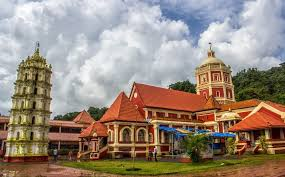

Shantadurga Temple

Location: Kavalem village, Ponda Taluka, ~33 km from Panaji
Deity: Goddess Shantadurga (peaceful form of Durga)
Architecture: Traditional Goan style with Deepstambha and sacred Kunda
Historical Background: Rebuilt between 1730 and 1738 after Portuguese destruction; renovated in 1966
Spiritual Significance: Major pilgrimage site for Goud Saraswat Brahmins
Local Name: Known as “Santeri” for her serene nature
Festivals: Sharad Navratri, Vasant Panchami, and annual Jatraustav
Associated Institution: Linked with Kavale Math, an important spiritual center
Kavlem Mangeshi Temple
Location: Priol, Ponda Taluka, Goa (~21 km from Panaji)
Deity: Lord Mangesh (form of Lord Shiva)
Architecture: Seven-storey Deepstambha and sacred tank
Historical Background: Moved from Cortalim to Priol in 1560 to avoid Portuguese attacks
Festivals: Celebrates Mahashivaratri, Magha Poornima, Navaratri, and Jatra
Cultural Significance: Revered by Goud Saraswat Brahmins; linked with the Mangeshkar family